A curated portfolio spanning infrastructure, programme management and residential development.
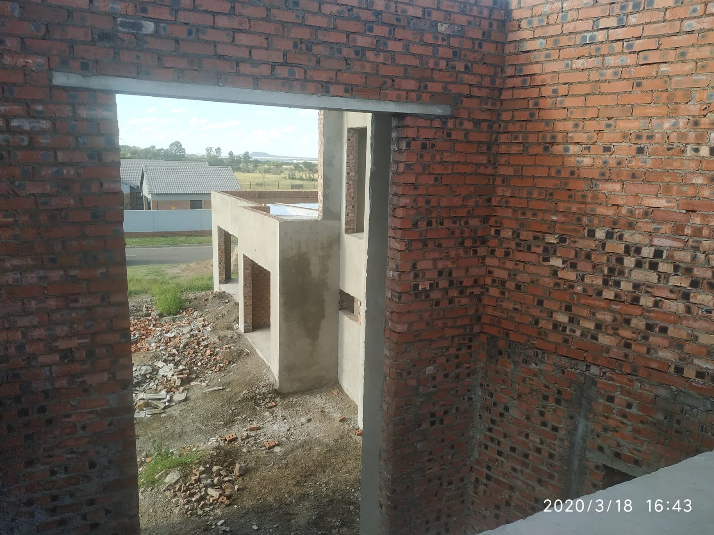
Bloemfontein, South Africa · Project Manager / Private Consultant
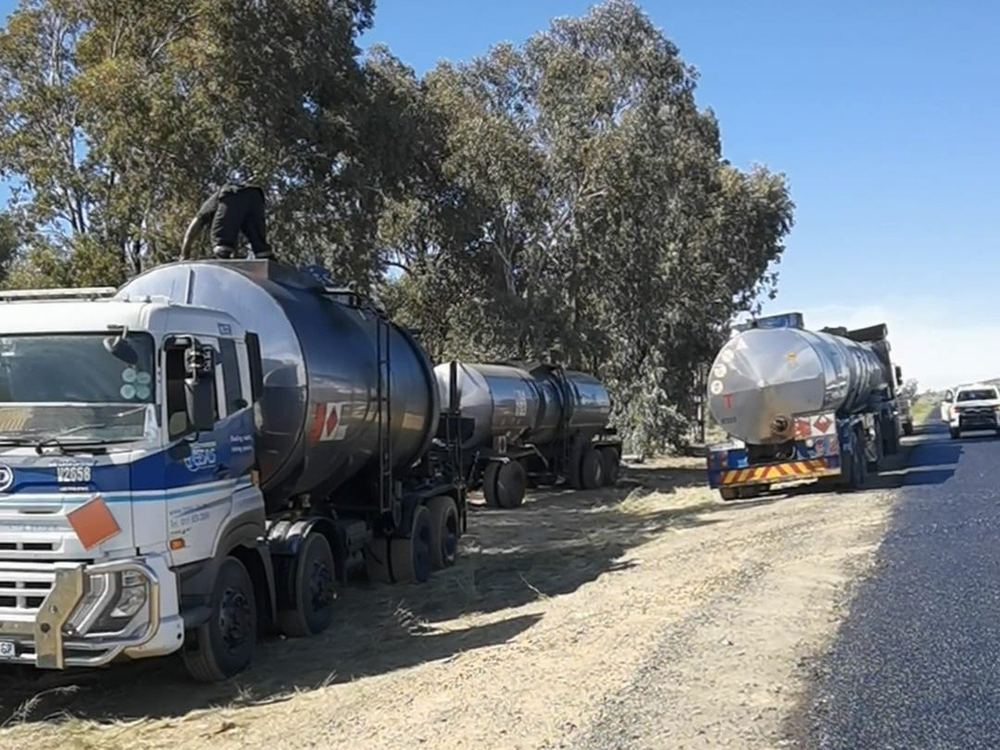
Free State, South Africa · Contracts Manager
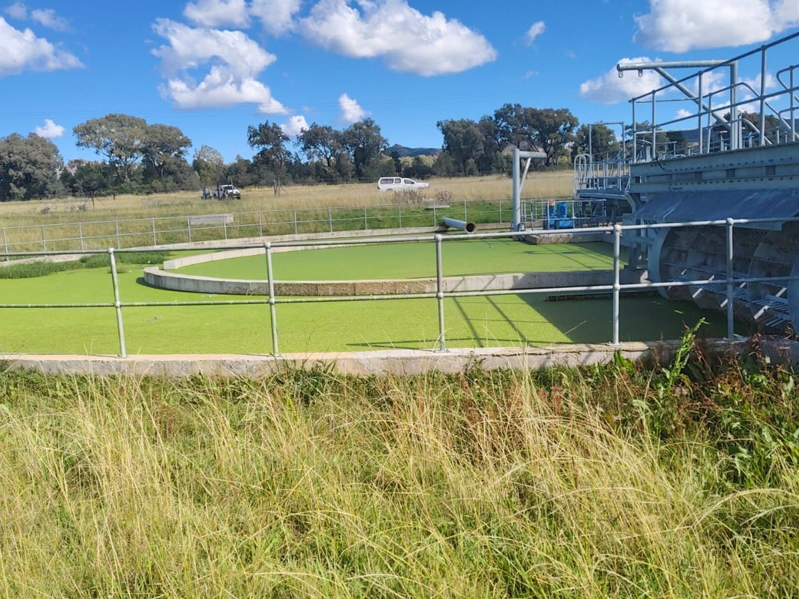
Zastron, Free State · Project Manager
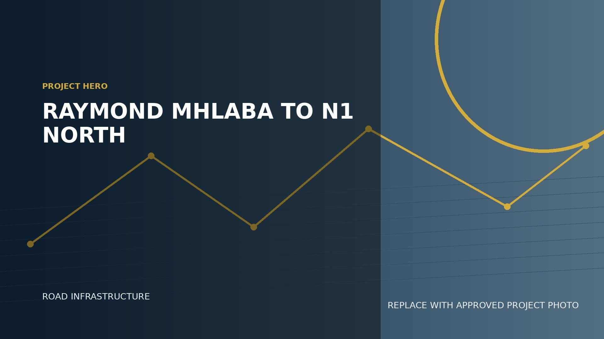
Bloemfontein, Free State · Contracts Manager
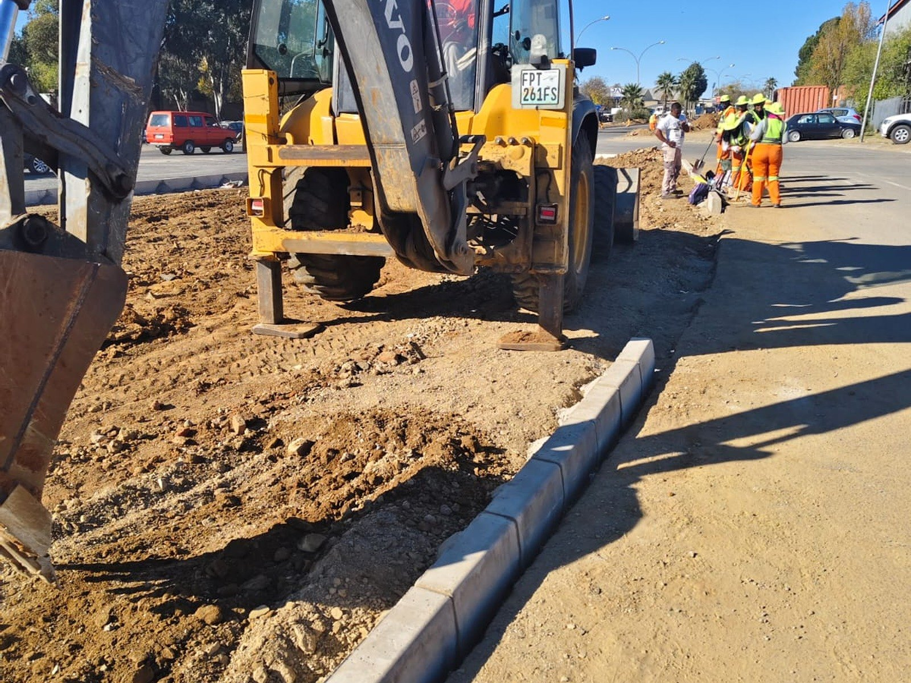
Mangaung, Free State · Contracts Manager
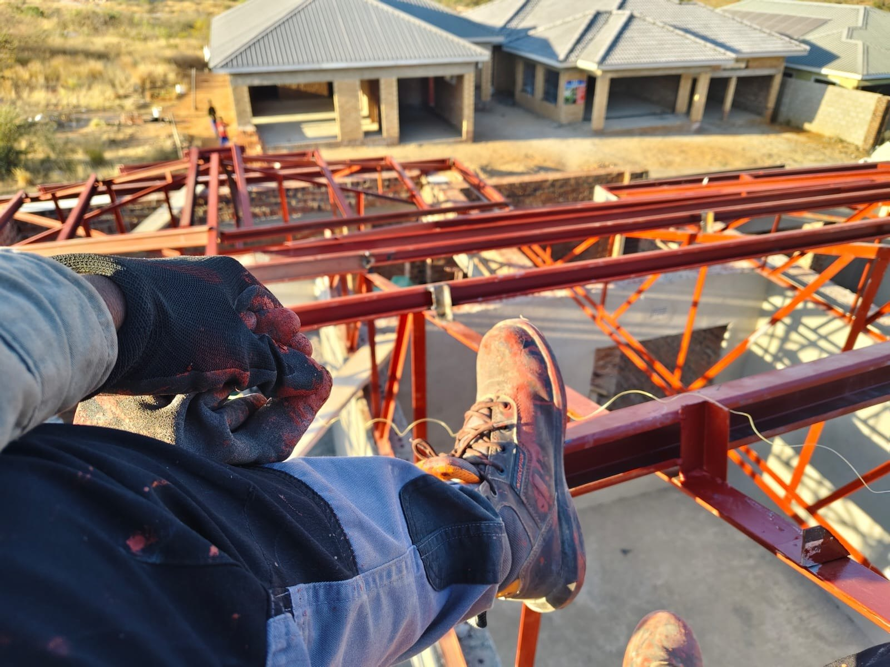
Bulawayo, Zimbabwe · Project Manager
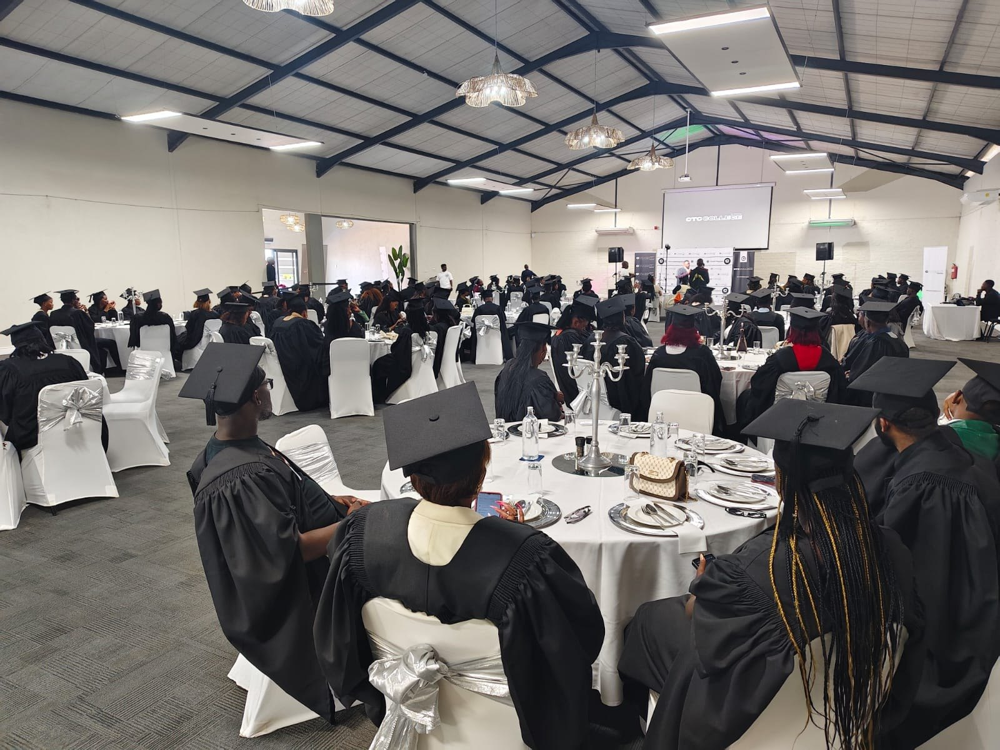
South Africa · Chief Project Manager
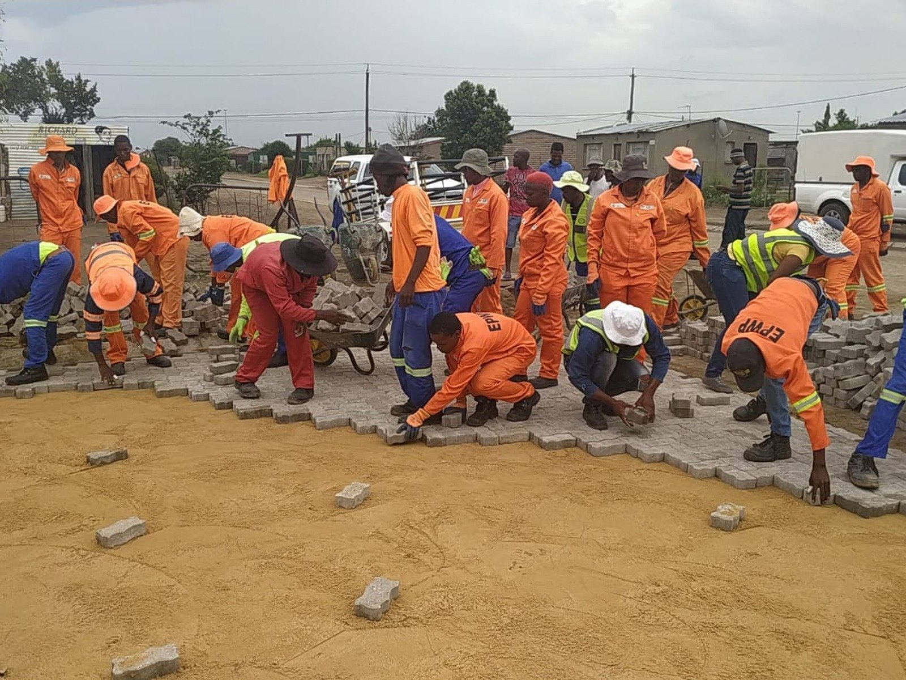
Free State, South Africa · Project Manager
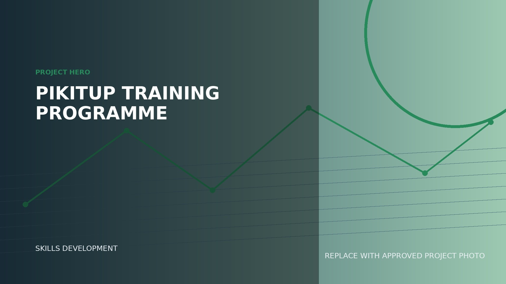
Gauteng, South Africa · Project Manager
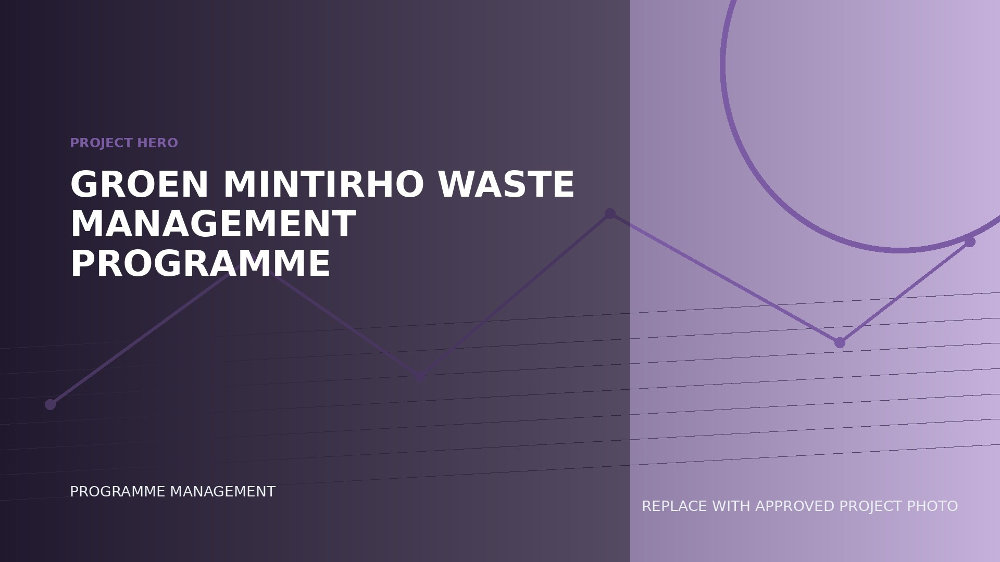
Gauteng & Eastern Cape · Project Administrator
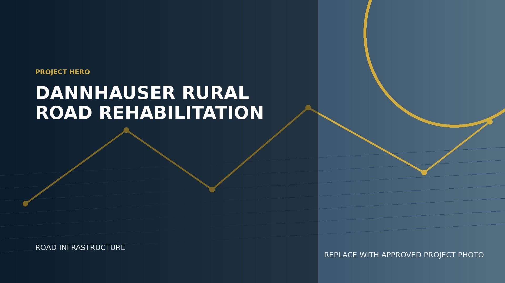
Dannhauser, KwaZulu-Natal · Project Manager